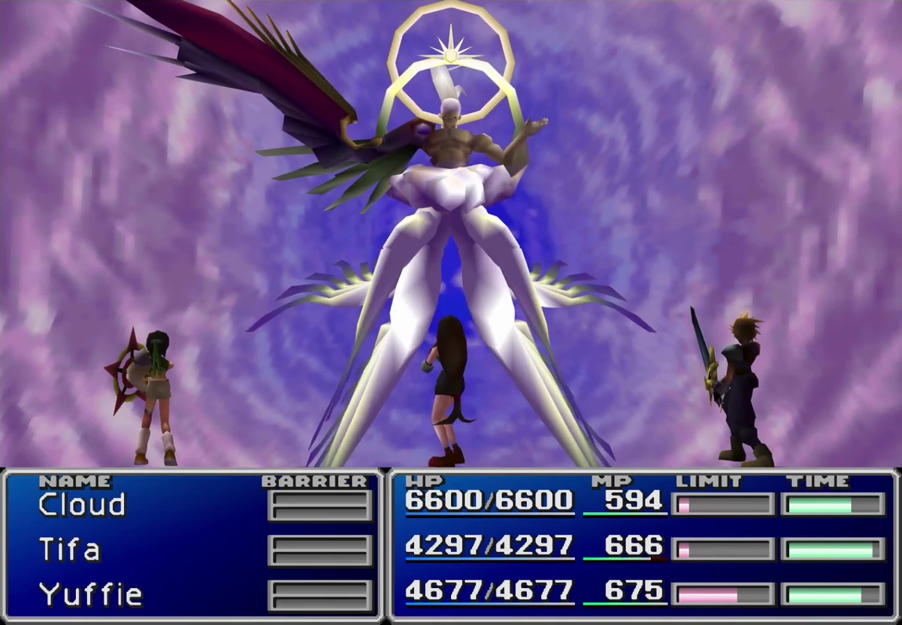
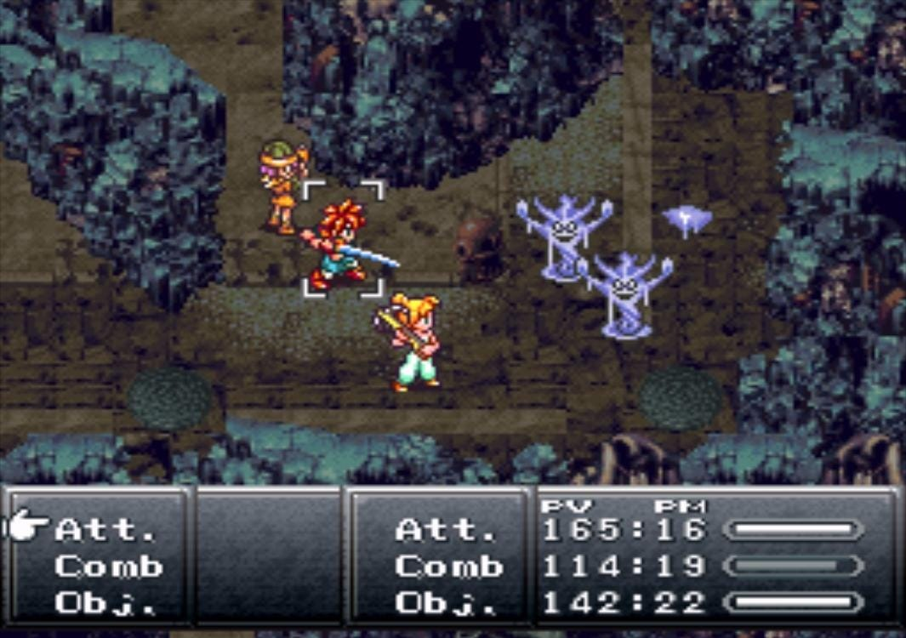
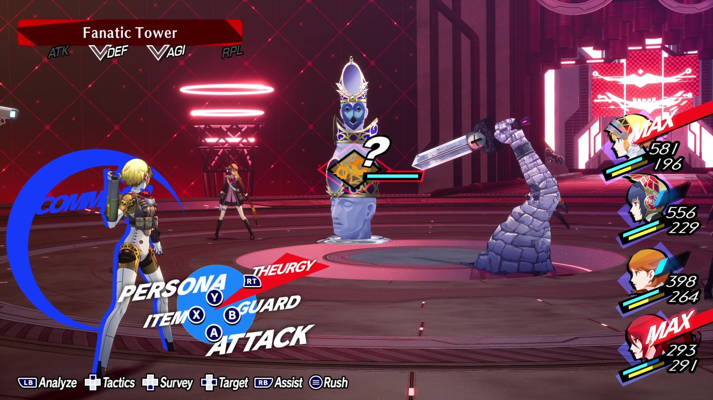
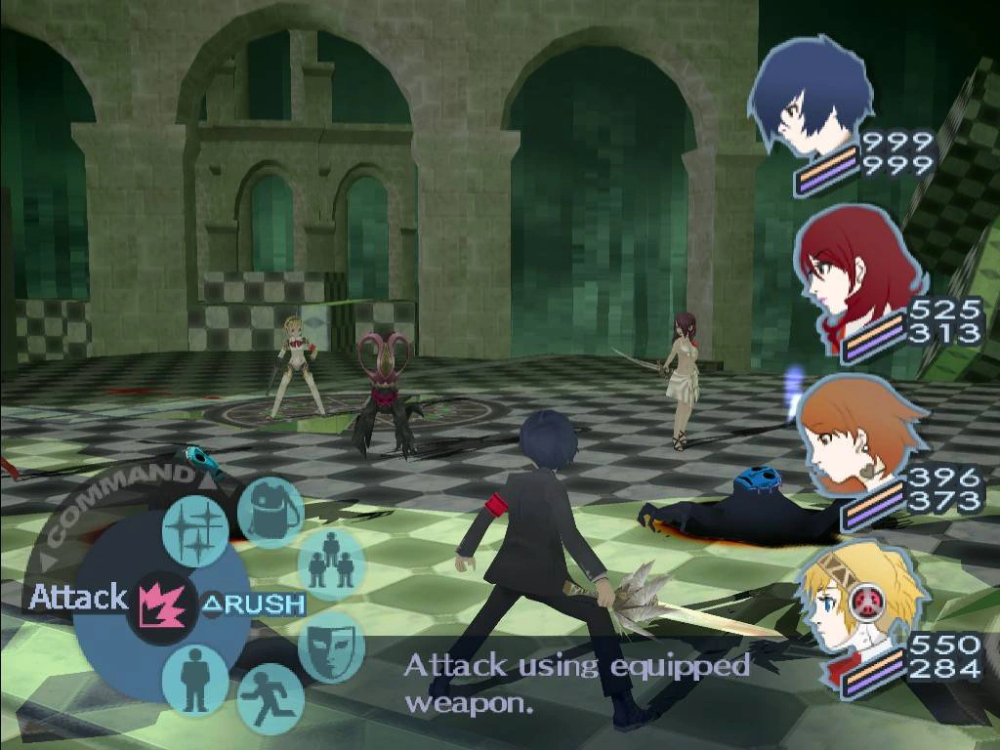
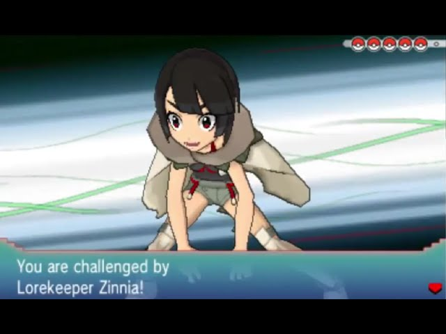
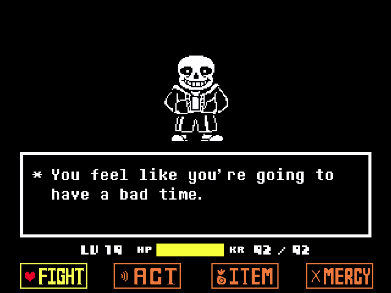
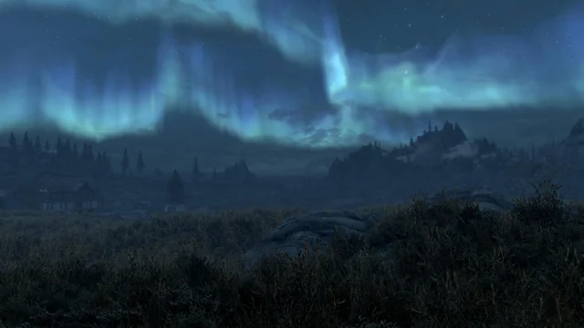
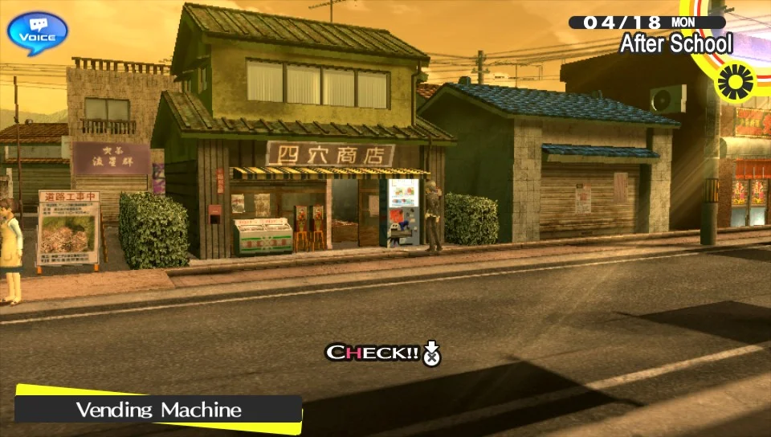
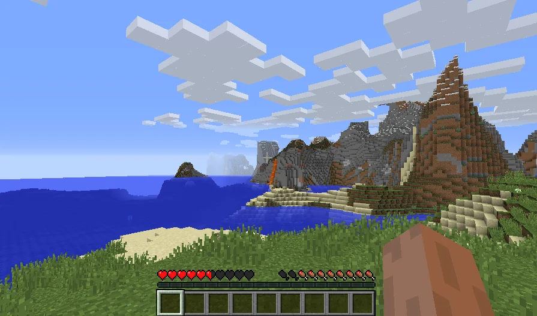
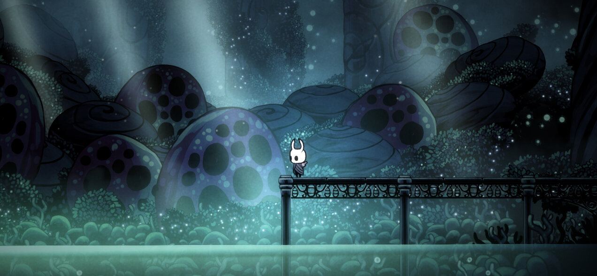

Video Game Soundtracks Gallery
Welcome to our gallery dedicated to video game soundtracks! Explore our curated collections where each group showcases music that defines genres, moods, and unforgettable gaming moments. Browse through epic battle themes and immersive ambient soundscapes, and discover the artistry behind your favorite game scores.
Epic Battle Themes from RPG Classics
This collection features the adrenaline-pumping battle themes that have accompanied some of the most memorable encounters in role-playing games. Each track is a masterpiece that elevates the intensity of the moment.
-
One-Winged AngelFinal Fantasy VIIorchestra along with the woodwind instruments in dissonance conveys something big is going to happen.
-
Random Battle ThemeChrono Triggersimple soundtrack primarily consisting of a fast plucked bass, soft choir sounds, drums, and kalimba, keeping the battle theme fast and simple without too much going on.
-
Don'tPersona 3 Reload: Episode Aigispiano, bass, drums, vocals and rapping are especially important as they hold meaning to the story itself.
-
Mass DestructionPersona 3use of trumpets, guitar, addition of vocals (rapping).
-
Battle! Lorekeeper ZinniaPokemon Omega Ruby/Alpha Sapphireorchestra + kalimba to give a feeling of a battle while keeping it melodic, much like zinnia's whole character.
-
MegalovaniaUndertaleUndertale’s iconic final boss theme, with driving guitar and synth.
Immersive Ambient Soundscapes
This group highlights soundtracks that craft rich, atmospheric experiences. These scores set the tone for exploration and reflection, drawing players deep into the game world.
-
SecundaThe Elder Scrolls V: SkyrimPiano, adds a darker and mysterious element.
-
Your AffectionPersona 4synth, vocals, tambourine, with a beat gives an upbeat feeling, something for a sunny day.
-
Firelink ShrineDark Souls
 orchestra (violins), gives the feeling of a sacred place.
orchestra (violins), gives the feeling of a sacred place. -
Subwoofer LullabyMinecraftsynth, electronic music.
-
Beneath the MaskPersona 5
 jazzy music, gives the impression of a calm day.
jazzy music, gives the impression of a calm day. -
GreenpathHollow Knightusing orchestra, with a different technique (plucking), thus giving a different feeling (one more journeylike).